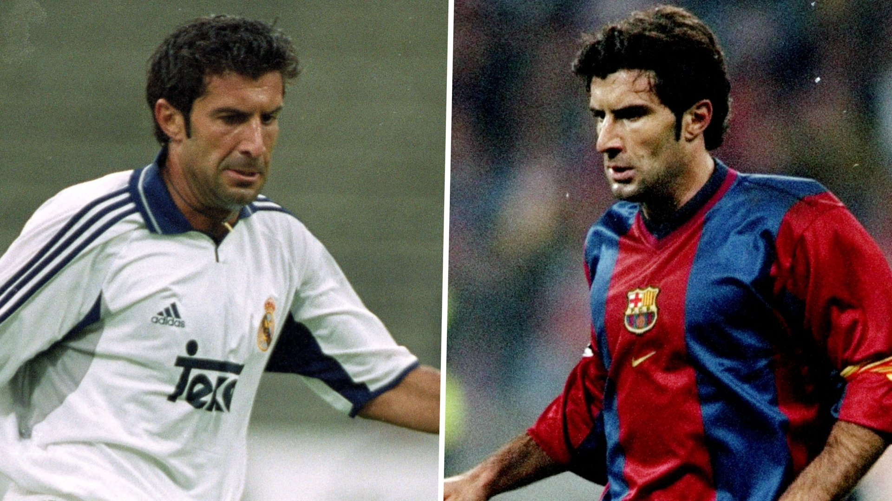
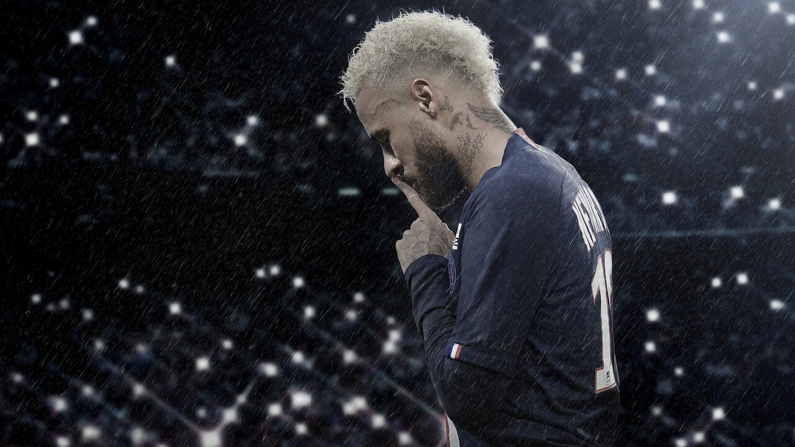
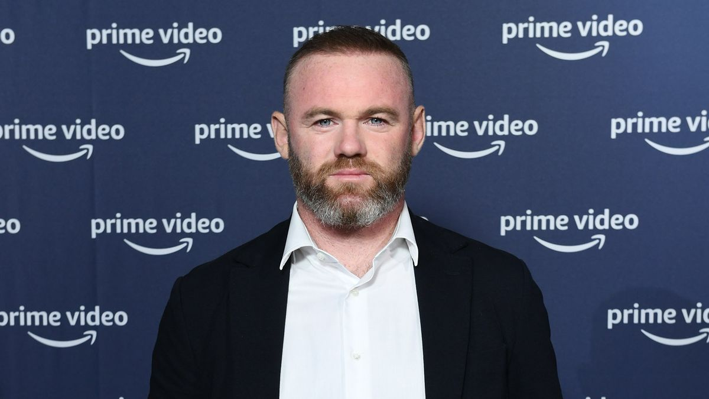
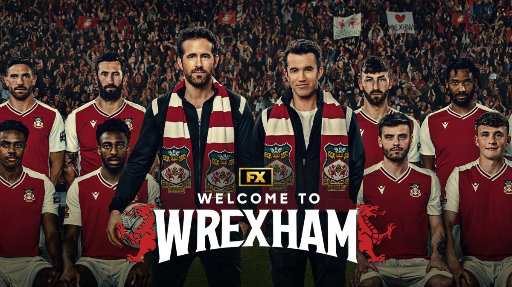
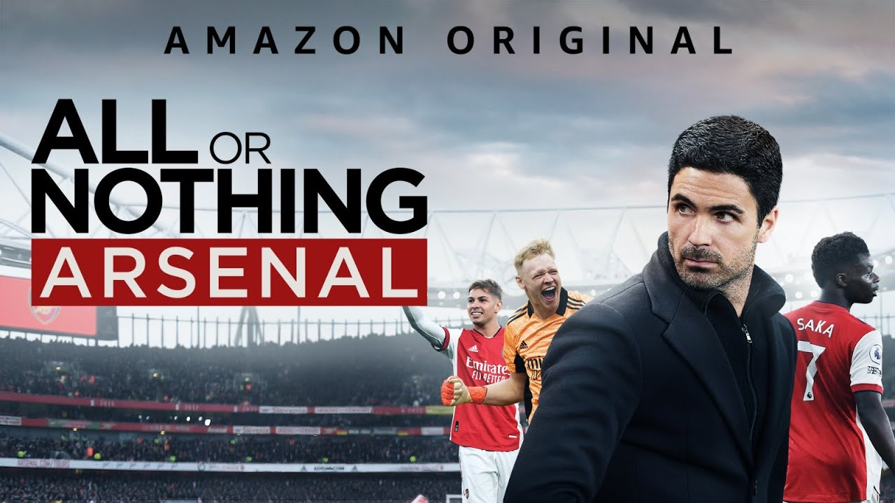
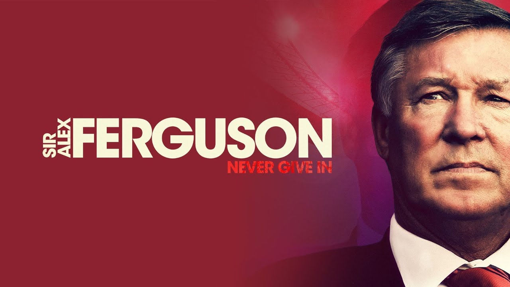
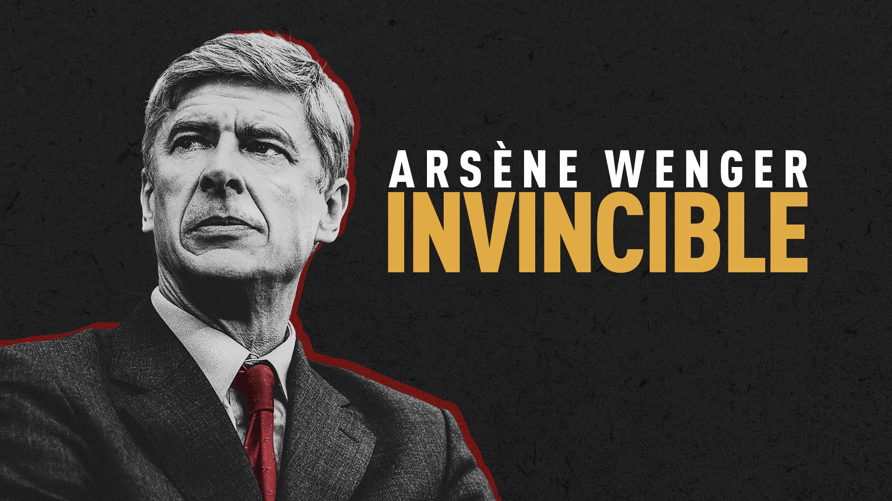
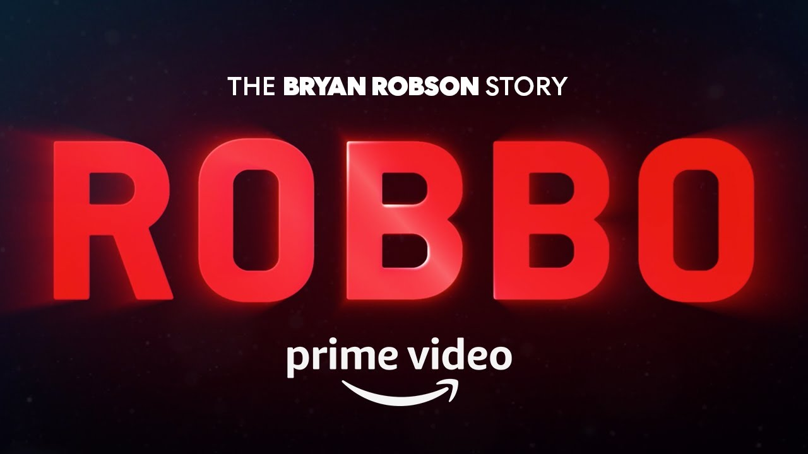
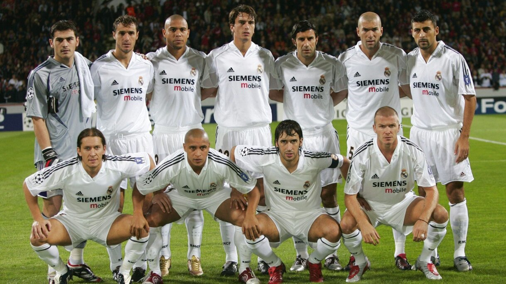

With gaps in the season, international breaks, and postponements in the football calendar, theres a lot of time when there might not be live football on TV, so why not watch some of the best football documentaries available right now.
We've compiled a list of the 10 best football documentaries available to watch online right now, through various streaming services including Netflix, Amazon Prime and Disney+.
1. The Figo Affair: The Transfer that Changed Football
How to watch: Netflix
This 1 hour 44 minute documentary released in 2022 spotlights one of the most controversial deals in football history and the magnificent player at the centre of the storm: Luis Figo.
2. Neymar: The Perfect Chaos
How to watch: Netflix
This limited series produced by Netflix follows Neymar Jr. as he shares the highs and lows of the his personal life and football career, including his enormous rise from the streets of Brazil to the glamour of Paris.
3. Rooney
How to watch: Amazon Prime
Rooney is a captivating feature length documentary with unprecedented access to the life and career of a global but controversial footballing icon and arguably England’s greatest ever player.
4. Welcome to Wrexham
How to watch: Disney+
Welcome to Wrexham documents Ryan Reynolds and Rob McElhenney's acquisition of the worlds 3rd oldest football club, Wrexham AFC. The show makes for a great watch as the two Hollywood stars have no experience in how to run a football club. Season 2 releases in September 2023.
5. All or Nothing: Arsenal
How to watch: Amazon Prime
All or Nothing: Arsenal follows the iconic North London football club during a season where they are expected to challenge for the top 4 but face the difficulties of COVID 19 and disruption within the squad. Can Manager Mikel Arteta cope with the pressure?
6. Sir Alex Ferguson: Never Give In
How to watch: Amazon Prime
This revealing 2021 documentary is about one of the greatest managers of all time, Sir Alex Ferguson. While recovering from a brain haemorrhage, he details his life and career, including his incredible 26 years as manager of Manchester United.
7. Arsene Wenger: Invincible
How to watch: Amazon Prime
Arsene Wenger: Invincible is the definitive portrait of the one the worlds greatest football managers. Featuring previously unseen footage and featuring a support cast of Sir Alex Ferguson, Thierry Henry and Ian Wright, this a must watch for any late 90’s, early 2000’s Premier League fan.
8. Robbo: The Bryan Robson Story
How to watch: Amazon Prime
Robbo is the remarkable feature length documentary that tells the story of the former England and Manchester United captain. It documents his life from his roots as a working-class kid in the North East to becoming a national icon.
9. Galacticos
How to watch: Disney+
A 3-part docuseries about Florentino Perez' first term as president of Real Madrid and the Galactico revolution which saw the club sign some of the worlds biggest names and featuing interviews with some of the legendary players that wore the famous white shirt.
10. South of the River
How to watch: Netflix
This docuseries tells the stories of young, high-profile footballers from South London, who beat the odds in their quest for international success. Featuring the likes of Rio Ferdinand, Jadon Sancho, Ademola Lookman and Tammy Abraham.